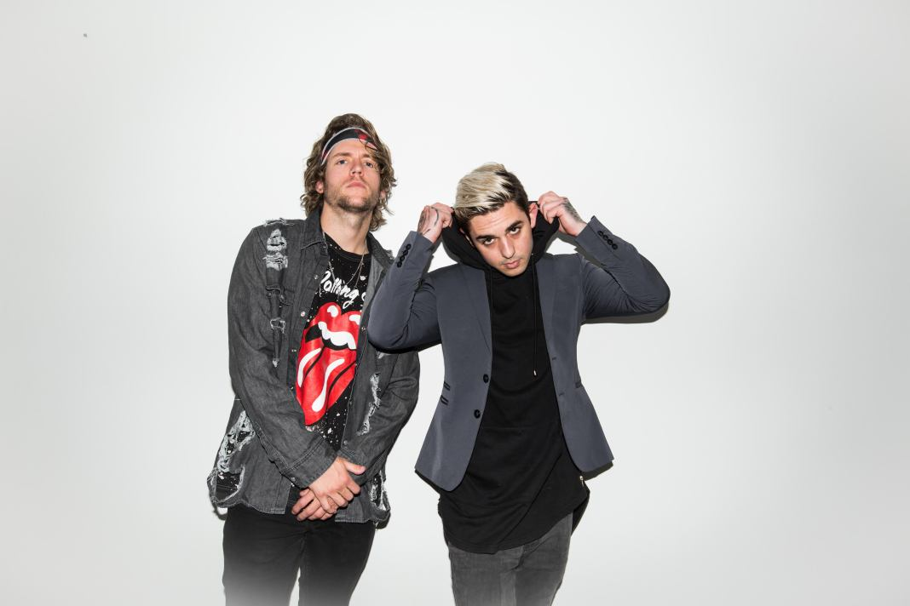
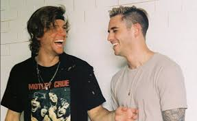
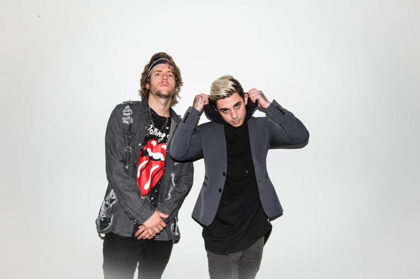

|  |
| NEFFEX drops scintillating single “It’s My Life” |
| Electronic duo NEFFEX have released a scintillating new song, “It’s My Life”. Another one of their standalone tracks, “It’s My Life” sees the two drawing on the carefree nature of summer for a catchy, danceable new single with an enjoyable, guitar-driven drop. Perfect for those summer nights, they say! Listen below. |
|  |
| NEFFEX drops new single, “Sunday” |
| Electronic duo NEFFEX have dropped a fun new track for those lonely, Sunday nights— “Sunday”. True, the lyrics are anything but sulky, but inspired by the “champagne Sundays” that the two hosted at their Hollywood Hills house, there’s nothing that works better than this to pump up your spirits as you wind down (or, start living your best life) at the end of the week. Listen to “Sunday” below. “We wrote “Sunday” after throwing these Champagne Sunday events at our house,” said the two. “We would buy a ton of champagne and food and invite a bunch of different friends, influencers and creatives to come by and party with us. Each one was an amazing time, so we tried to capture the overall vibe of those Sundays with this song.” “Sunday” is Neffex’s second release this summer, having previously debuted their pop anthem “It’s My Life” earlier this month. A debut EP is currently in the works for the two, but most of the details are under wraps. The band is also gearing up for a short but exciting tour, kicking off Sept. 12 with a headlining date at LA’s The Troubadour. NEFFEX will then head to the Europe for their fall European tour, kicking off Oct. 15th in Zurich. |
 |
| NEFFEX naar de Melkweg |
| Naar eigen zeggen is NEFFEX ‘Just a couple of dudes making tunes’, maar daarmee doen zichzelf te kort. Dit bass-music duo uit L.A. bestaat uit de oude schoolvrienden zanger Bryce Savage en producer Cam Wales. In 2017 besloten de twee om elke woensdag om 9uur een track uit te brengen. Deze campagne duurde 100 weken en bracht dus ook 100 nummers, meer dan 800 miljoen streams en een snelgroeiende schare fans op. Er ontstond een unieke sound waarin Rock, Hip-Hop en EDM werden gecombineerd. Met hun debuut-EP en de eerste headliner-tour willen Bryce en Cam luisteraars over de hele wereld aanmoedigen om het leven ten volle te leven en hun dromen nooit op te geven, terwijl het duo de hunne blijft waarmaken. |
 |
| YouTube Millionaires: NEFFEX Supplies YouTube's Creator Community |
| Ask a YouTuber about finding background for their videos, and you’ll likely get a sigh and a long-suffering look. That’s because in many cases, YouTubers can’t find copyright-free or inexpensive-to-license music to use in their videos. And if they use even a few seconds of music that is copyrighted, they run the risk of their entire video getting demonetized. It’s a constant struggle — one NEFFEX wants to help ease. The duo, comprised of Cameron Wales and Brandon Horth, has dedicated all its creative efforts to making a library of professional, copyright-free songs for fellow creators (and anyone else) to use in their videos and other content. NEFFEX puts out a new song each Wednesday, an intensive endeavor that requires Wales and Horth to spend dozens of hours in the studio every week. NEFFEX’s offerings run the gamut from raw, electronic-heavy songs like most recent release “Rumors” to pounding rock anthem “Careless” to softer, Linkin Park-reminiscent “Broken Dreams.” Along with constantly producing music in varying genres, Wales and Horth manage NEFFEX’s sizeable merch shop and other arms of the behind-the-scenes business, including forays into new types of content. |
|  |
| After self-releasing 100 songs in 100 weeks, Southern California duo Neffex readies its debut EP |
| Millennials get a bum rap when it comes to being labeled as lazy or uninventive, especially in the music industry. Orange County musicians Bryce Savage and Cameron Wales definitely don’t fit that stereotype. In 2017 the pair, who dubbed their musical project Neffex, decided to challenge themselves and hone their skills by releasing a complete song a week for 100 weeks straight. Inspired by artists such as Lil Wayne and Russ, who were sporadically dropping full albums and releasing singles regularly online, Neffex uploaded a song at 9 a.m. every Wednesday to its social media pages including YouTube, as well as streaming services like Spotify, Apple Music and Soundcloud. Savage and Wales also made the music available royalty-free for anyone to use for any project. All they asked in return was to be tagged or shared in whatever the material was used for. The self-released, mixed and produced songs, including “Fight Back,” “Rumors,” “Careless,” “Life,” “Soldier” and “Best of Me,” led to nearly 2 million YouTube subscribers and more than a billion total streams in two years. |
 |
| NEFFEX UNVEIL NEW MUSIC VIDEO FOR “SUNDAY” |
| Southern California duo NEFFEX have unveiled the official music video for their song “Sunday” today. Inspired by the “Champagne Sundays” that the duo hosted at their Hollywood Hills house, the piece features the group’s own Bryce Savage (vocals) and Cameron Wales (guitar, decks) as they throw an unforgettable party with friends and endless bottles of champagne. Earlier today, Billboard exclusively premiered the video HERE and praised the song’s “vivid hook led by glassy synths”. Watch the video now HERE. “Sunday” was officially released last Friday, August 23rd via 12Tone Music Group and was written, produced and mixed by the duo themselves. The track was preceded by NEFFEX’s pop anthem “It’s My Life”, which debuted earlier this month. “Working on Sunday was a blast,” said NEFFEX. “We wrote it based around the vibe of these Champagne Sunday events we used to throw at our place where we’d buy a ton of champagne and alcohol and invite all of our friends around LA to come over and just enjoy themselves. The music video captures the fun we had throwing those, and the different ways our friends all got to meet, interact with one another and party with us.” |